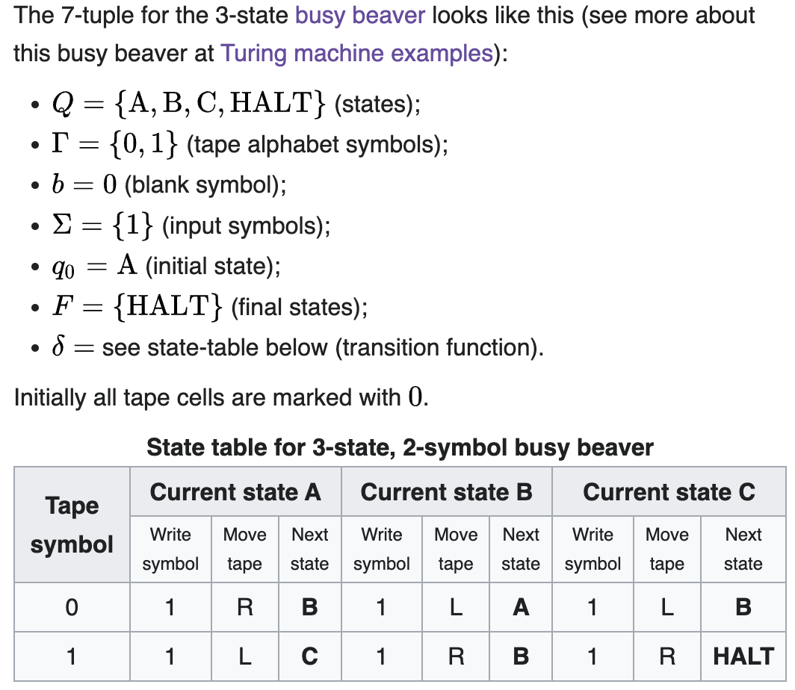

It's been described to me as, "information resolves uncertainty." I think the best way to get a sense for it is talking about surprisal with regards to a specific thing.
You come to a fork in the road and you have no ideas about which way might be the correct way to go. We can represent them as paths $A$ and $B$. A natural way to represent this is with binary labels, hence it would be instead path $0$ for $A$ and path $1$ for $B$. Intuitively, if someone perfectly trustworthy tells you which way to go, they would be be giving you 1 bit (binary digit) of information: they're giving you a 0 or 1 to distinguish the options in the binary choice.
What if you do have some information preceding this, though? What if you have 70% confidence that path $A$ is correct, since someone earlier on the road who seemed somewhat trustworthy told you it was? They wouldn't be giving you still 1 bit of information, because you'd be updating less — you're less surprised. You already thought this was the case, they're just upgrading your confidence. No longer can we work with simple integers of bits; we realize from this that the amount of information you get is directly related to how much knowledge you already have — or don't have.
The intuition here is that the amount of information you're getting is related to how surprised you are to receive it.
In a formal sense, surprisal quantifies how wrong your predictions were. (At least, this is one way to think about it — a starter intuition, if you will.) When an event you didn't expect occurs — i.e. it surprises you — that surprise tells you that your model of the world was wrong or incomplete, insofar as you didn't predict the event with 99.99% confidence. Hence, you most likely have to update your internal model of the world such that it would predict that outcome with higher confidence. Surprise tells you that you're receiving information about the world, about how your model was wrong.
If you have a perfect internal world model — i.e. you're literally omniscient and you can simulate every single possible causal relation in the universe at once — your model will never update, and you'll never be surprised; you know all the information! Conversely, if your model of the world is consistently horrible, you'll be constantly updating your model after your predictions are falsified, constantly surprised at the world. You know very little of the information.
I'll talk about how to measure error and surprise soon, but for now I want to finish formalizing information — I'll derive intuitively the way you actually calculate the information you receive from an event's occurrence.
I'll start with two ways that you might naturally think about information as a mathematical object, and why those ways lead you to computational problems.
From the 70%/30% situation above, you might think that the person on the path would be giving you 0.3 bits of information, thus making up for the difference in the outcomes. (This would be incorrectly applying intuitions that "probabilities should sum to 1.") If you think about this more deeply, though, the math doesn't work out; distinguishing between two perfectly uncertain options — events that have priors of 0.5 each — would only give you 0.5 bits of information, as opposed to the 1 bit we would expect. Shouldn't someone revealing to you a bit — a zero or a one, a binary choice — give you one bit of information, if you have literally no idea what that bit might be?
Here's another way that "adding to 1" doesn't work out nicely: if you have two fair coins and you flip them both separately, each coin flip would theoretically give you 0.5 bits of information. However, if you looked at it from the perspective of their joint probability distribution — for example, $P(\text{2 heads}) = 0.5 * 0.5 = 0.25$ — we would get 0.75 bits of information instead. This just straightforwardly doesn't work out. Two independent events should not give different amounts information just based on whether you look at their probabilities together or separately — but we just saw that happen! We have to keep looking.
Okay, so information for an event $x$ can't just be $1-P(x)$. What else could it be?
If we think about it, the information we get is quantifying how wrong we are. If event $x$ happens and we predicted it with very high confidence, the amount of information should be really low — we expected it, and aren't very surprised. But conversely, if we predicted $x$ with really low confidence, the amount of information should be very large — and it should scale with orders of magnitude. If our $P(x) = 10\%$ and $x$ occurs, this should be very very different from if our $P(x) = 0.1\%$ — orders of magnitude different. So maybe we could say information is proportional to $1/P(x)$?
That's almost right, but we're still missing something.
To see what's wrong let's imagine two fair dice. The probability of rolling a one on die $A$ is $1/6$; for $B$ it's also $1/6$. If we use $1/P(x)$, and look at the dice independently, seeing snake eyes — two ones — (or any other outcome for that matter) would give us $6 + 6 = 12$ bits. But if we once again consider the joint probability distribution, and ask what the probability of rolling snake eyes is, that probability is $1/6 \cdot 1/6 = 1/32$ — so if we once again rolled snake eyes, we'd get 32 bits of information instead of 12!
What's going on here? We once again just combined two independent events together into one observation without changing their independence, without changing the probability — and the amount information changed. The problem is that we want information to change additively, not multiplicatively; when you "get more information" from an event your knowledge doesn't double, but increases linearly — at the same times as probability, the quantity we want to base our observations on, scales multiplicatively.
To go back to the dice scenario: when we look at the joint distribution of the two dice, or three dice, or $n$ dice, the probability of one specific combination of those dice will be $1/6^n$. But we want the information to increase linearly as the probability decreases multiplicatively. If we wanted to linearize our probability graph, what would we do?
Take the $\log$ of it!
Since we're working in binary already (with bits of information), we can use the $\log_2$ scale — our probability will be $P(x)$ and our information will be $\log_2(1/P(x))$. Ta-da! Here's our information equation: $$I[x] = \log_2(\frac{1}{P(x)}) = -\log_2(P(x))$$ (Sometimes it's nicer to use a negative sign instead of an inverse, but they're equivalent.)
To sum it up, we use $1/P(x)$ because we want information to be inversely proportional to probability — the occurrence of a (in our minds) low-probability event should give us lots of information, and the reverse for high-probability events. Then we add the $\log$ so that information will add when we look at multiple events together, instead of multiplying — it'll accumulate nicely over time instead of exponentiating rapidly.
This equation gives us nice properties:
Fig 1: The graph of $y = \log_2(x)$, where $y$ is the "information content" or the surprisal produced by the occurrence of an event whose probability in your mind is $x$.
So there's the idea about why the information content of an event uses a log scale. To sum it up, $\text{Information} = -\log_2P(x)$ where $x$ is an outcome and $P(x)$ is the probability of that outcome. (Sorry to mix notations with $x$ being probability and $x$ being an outcome — hopefully that's not too annoying.)
We might want to look at information on the level of a probability distribution. We've talked about the information content of specific events, but how do we talk about our beliefs about an event — our internal distributions?
One thing we can talk about is entropy. Entropy in information theory describes something like, "How predictable is this distribution? How surprised will I be on average by an outcome?" In general, entropy measures the predictability of a distribution. (This is not a notion limited to information theory. For example, in statistical mechanics, the entropy of a particular macrostate/thermodynamic state is the number of possible microstates that could produce that macrostate — in other words, the unpredictability of the precise arrangements of atoms for a given macrostate; the unpredictability of the particular positions of atoms, summed over the distribution of all of them.)
Intuitively, to talk about how much we expect to be surprised given a distribution of the probabilities of possible outcomes of an event, we can do a simple expected value calculation: take the sum of the information content of each possible outcome, weighted by the probability of the outcome.
Hence, we can describe "expected surprise", AKA Shannon entropy ($H$1, for a probability distribution $X$ using the following formula: $$ H(X) =\sum_{\text{all outcomes in x}} \text{P(outcome)} \cdot \text{Info if outcome occurs}$$
Written in variables: $$H(X) =\sum_{x \in X} P(x) \space \log_2 \frac{1}{P(x)}$$ or $$ H(X) =-\sum_{x \in X} P(x) \space \log_2P(x) $$ where $X$ is a distribution of individual events $x$ and $P(x)$ is the probability you assign to the event. Hence, this sum represents going across each possible event in the distribution and computing the value $P(x) * \log_2(1/P(x)$ — corresponding to the info given by an outcome, weighted by how likely it is — then summing that up for each distribution.
Fig 2: The graph of $-x * \log_2(x)$, which you can call the "expected surprisal" — the probability of the outcome occurring times the surprise that you would receive if it did occur. Notice how the graph is skewed right, but low-probability events, even though they have high surprisal, will have low expected surprisal because they're so unlikely.
Higher entropy to me intuitively means less predictability. For example, for the distribution $$X: \{x_1 = 0.9, x_2 = 0.05, x_3 = 0.05\}$$ the entropy is $$-[(0.9 * \log_2(0.9)) + 2 * (0.05 * \log_2(0.05)] \approx 0.473$$ — whereas for the less-predictable distribution $$X: \{x_1 = 0.33, x_2 = 0.33, x_3 = 0.34\}$$ the entropy is $$-(2 * (0.33 * \log_2(0.33)) + (0.34 * \log_2(0.34)) \approx 1.585.$$
Okay, we know how to measure the "disorder" or "unpredictability" of a distribution using its entropy. If we wanted, we could compare two distributions just using their entropy — but that wouldn't tell us how similar they were to one another. They could be entirely different, with entirely different events which had entirely different probabilities, and still have the same entropy. Our comparison would only give us a measure of how relatively disordered or unpredictable one distribution is to another.
We want a way to look at two distributions and see how different they are. For example, maybe you have reliable information about the true probability distribution for some set of events, and you want to measure how different your internal predictions were from that true distribution — say, to compare your accuracy to that of your friend's models. (I mean, you usually can't access your internal probabilities for things, so let's pretend you both actually made statistical models of the thing.)
One way to do this is Kullback–Leibler divergence, but people seem to have a hard time pronouncing this (?) so instead they just call it "KL Divergence." This comes up all the time in other fields, for example machine learning — it turns out that it's really useful to be able to compare two distributions!
The intuition for how you calculate KL divergence builds on the concept of surprise and information we built up earlier.
Let's say you want to play a coin toss game — if it's heads you win, if it's tails you lose. Your friend Anansi conveniently has a coin on hand, and offers it to you for the game. Unbeknownst to you, Anansi's coin is unfairly weighted — it's tails 70% of the time and heads only 30% of the time.
Hence, you have the following distributions:
$P$ is the true probability distribution of outcomes given by the weighting of Anansi's coin.
| Outcome | Heads | Tails |
|---|---|---|
| Probability | 0.3 | 0.7 |
$Q$ is your model of the distribution of outcomes for that coin toss. (You assume it's a fair coin by default.)
| Outcome | Heads | Tails |
|---|---|---|
| Probability | 0.5 | 0.5 |
How do we measure the difference between these two simple distributions?
One way to do this would be to measure the expected additional surprise that we'd receive from playing this game thinking that the outcomes were governed by distribution $Q$ when actually they were governed by $P$. To put it another way, we'd be measuring the additional surprise we get if we think $Q$ instead of $P$ is true.
If you're using model $Q$ when the true probability distribution is $P$, the expected additional surprise for that single event will intuitively be
Formally, you write this as $$P(x)\cdot(\ln(\frac{1}{Q(x)})-\ln(\frac{1}{P(x)}))$$ and if you want to look at this across the whole distribution (each event $x$ in the set of events $X$), you just use the summation
$$\sum_{x \in X}P(x)\cdot(\ln(\frac{1}{Q(x)})-\ln(\frac{1}{P(x)}))$$ giving you the formula for KL Divergence!
(Also, if you're confused by the use of $\ln$ instead of $\log_2$, see footnote 2. TL;DR the different logarithms don't matter much, you just kinda use whatever's convenient, so I'm switching to $\ln$ here because it's conventional for calculating KL divergence and is hence convenient.)
You might notice that this looks a lot like the entropy formula, which if you recall (now with $\ln$ instead of $log_2$) is $$H(X) =\sum_{x \in X} P(x) \space \ln \frac{1}{P(x)}$$. This similarity should make sense! Remember that entropy measures expected surprise; KL divergence measures expected additional surprise. In fact, another name for KL divergence or expected additional surprise is relative entropy! The only difference is that you're now measuring the divergence of one distribution from another, instead of just the expectations you have about a single distribution in isolation.
Great. Now we can use this to calculate the divergence of our predictions from the true probabilities of heads/tails from Anansi's coin — but first, let's adjust some things in this formula real quick, so that this definition looks like the more standard one on Wikipedia. First, we need to give it a formal function name. Standard is $D_{KL}(P \space ||\space Q)$ ("the KL divergence of P from Q"): $$D_{KL}(P \space ||\space Q) = \sum_{x \in X}P(x)\cdot(\ln(\frac{1}{Q(x)})-\ln(\frac{1}{P(x)}))$$
Then we do a bit of logarithm algebra, turning the log subtraction into division inside one logarithm:
$$D_{KL}(P \space ||\space Q) = \sum_{x \in X}P(x)\cdot\ln(\frac{\frac{1}{Q(x)}}{\frac{1}{P(x)}})$$ And then we just simplify the fraction using the reciprocals to get our final equation: $$D_{KL}(P \space ||\space Q) = \sum_{x \in X}P(x)\cdot\ln(\frac{P(x)}{Q(x)})$$ To reaffirm this intuitive derivation, let's get back to playing games with Anansi. Our expected additional surprisal for a single game would be $$\textbf{(1)} \: \: P(\text{Heads})\cdot [\ln\frac{1}{Q(\text{Heads})}-\ln\frac{1}{P(\text{Heads})}]$$$$+ \space \space \space P(\text{Tails})\cdot[\ln\frac{1}{Q(\text{Tails})}-\ln\frac{1}{P(\text{Tails})}]$$
Which we can simplify as follows:
$$\textbf{(2)} \: \: P(\text{Heads}) \cdot \ln(\frac{1/Q(\text{Heads})}{1/P(\text{Heads})}) + P(\text{Tails}) \cdot \ln(\frac{1/Q(\text{Tails})}{1/P(\text{Tails})}) $$ $$\textbf{(3)} \: \:P(\text{Heads}) \cdot \ln\frac{Q(\text{Heads})}{P(\text{Heads})} + P(\text{Tails}) \cdot \ln\frac{Q(\text{Tails})}{P(\text{Tails})} $$
Now, we can write it all in decimal form, substituting according to our two-way table
| Heads | Tails | |
|---|---|---|
| P(x) | 0.3 | 0.7 |
| Q(x) | 0.5 | 0.5 |
$$0.3 \cdot \ln(0.5/0.3)+0.7 \cdot\ln(0.5/0.7) \approx 0.08228 $$ To confirm this, we can write a little python script (credit to Zach Bobbitt on Statology):
from scipy.special import rel_entr P = [0.3, 0.7] Q = [0.5, 0.5] print(sum(rel_entr(P, Q)))
Which nicely yields 0.08228287850505178. :D
There's how you describe and calculate K-L divergence!
Until now, we've mostly talked about information as it relates to surprise, or error, with events out in "the world" — you get information from "the world" when your predictions about it don't match up to reality. However, "the world" doesn't have to be, say, reality as a whole (in the style of a bayesian agent that does predictive processing/active inference, which I'll talk about in another post or something): we can zoom into specific kinds of events that are modeled by probability, and treat those as if they are our entire "world" — we just need to slightly adjust the way we apply our intuitions.
In particular, here I'm thinking about applying information theory to data transfer and compression. It's useful and interesting — though it is somewhat limited in its results, for reasons related to the assumptions of Shannon's coding theorem (in particular, that the sequence we're talking about was generated probabilistically, with each character coming from the same random variable defined by the same distribution) which I'll talk about more below. But I think this is a great starting point for lots of other interesting ideas I'd like to get to, like Kolmogorov complexity, and, surprisingly, diagonalization arguments like Gödel's incompleteness theorems.
Let's say we have a probabilistic event, and we want to store a history of its occurrences. We can return to our scenario with Anansi for this.
Anansi finally told you that the coin wasn't fair, so you decided to play a game with a four-sided die that he had in his pocket instead. (A pyramidal die, basically — look it up if you've never seen a d4 before.) You'll roll the die a bunch of times and then tally up your score after 20 rolls — so you need to save the results of your rolls in a string. For convenience, the die has numbers 0 to 3 on it instead of 1 to 4.
You could store it as follows:
3 2 1 2 3 2 2 1 3 1 2 2 2 2 2 2 3 3 0 2
In a computer that would be stored in bits (spaces added for readability; in reality there are no spaces between numbers):
11 10 01 10 11 10 10 01 11 01 10 10 10 10 10 10 11 11 00 10
But let's say, for the sake of illustration, our storage space is super limited. Is there way to compress this string — any shorter representation of it that could still save it exactly?
The answer is, basically, "not really." Shannon's source coding theorem formalizes this. Source coding is what we call it when we encode the output of an information source into symbols from an alphabet, usually bits, such that it's invertible, i.e. you can undo the encoding to get the original output of the information source. For our current purposes, this information source needs to be discrete, like dice rolls or words in spoken English, not a continuous function. (You can extend these ideas to continuous functions, but that's a separate domain called rate-distortion theory, which I currently know nothing about.)
Shannon's source coding theorem states that (a) the upper bound on efficiency of compression for a discrete information source generated by a random variable is the entropy of that random variable, and (b) you can create encodings that get arbitrarily close to that bound.
Let's unpack that a bit. (A) is placing a bound on how well you can compress a sequence like the one we have above. The actual mathematical formulation says that the average number of bits per symbol can't be less than the entropy of the variable.
Let's walk through an example using the 4-sided die and our formulas from above. The entropy of our 4-sided die — assuming it's fair — is the sum over each possible outcome's probability times the information it would give us. (Note that I'm going back to $\log_2$ because we're using bit representations of the code and it's nice if we use that.)
$$ \textbf{(1)} \space \space H(\text{4-sided die}) = \sum_{x \space \in \space \text{outcomes}} P(x) \cdot \log_2 \frac{1}{P(x)}$$ $$ \textbf{(2)} \space \space H(\text{4-sided die}) = 4 (0.25 \log_2(1/0.25) $$ $$ \textbf{(3)} \space \space H(\text{4-sided die}) = \log_2(4)= 2 \: \text{bits}$$ So our entropy is 2 bits. As you saw above, we were storing our scores in two-bit numbers (spaces added for readability):
11 10 01 10 11 10 10 01 11 01 10 10 10 10 10 10 11 11 00 10
Which is great! That means we have an ideal encoding — the code rate (this is the technical term for "number of bits in the encoding, per symbol in the original source.") is 2 bits, which is equal to the entropy.
So what (a) in Shannon's source coding theorem is saying is that no matter how good our encoding is, we'll never be able to find an encoding that has a lower code rate than the entropy of the source — that is, without losing information. (If we're willing to compress lossily, we might be able to get below that bound.)
What (b) is saying is that, no matter the discrete source, we can always find an encoding that gets the code rate arbitrarily close to the source's entropy. For the situation with a fair 4-sided die, we by default have a coding that's ideal; that's usually not the case.
Back to you and Anansi. You clearly should have expected that Anansi would have an unfair die, if he already had an unfair coin on hand. After playing with him for a while, you begin to really suspect that the die isn't fair. You press him on it, and he finally reveals the true distribution of values:
| Value (x) | 0 | 1 | 2 | 3 |
|---|---|---|---|---|
| P(x) | 0.125 | 0.125 | 0.5 | 0.25 |
So that means the entropy isn't actually 2. Let's calculate it again:
$$ H(\text{Unfair die}) = 2(0.125\log_2 \frac{1}{.125}) + 0.5\log_2\frac{1}{.5} + 0.25 \log_2 \frac{1}{0.25}$$ $$ H(\text{Unfair die}) = 2(1/8\cdot\log_2 8) + 1/2 \cdot\log_22 + 1/4 \cdot \log_2 4$$ $$ H(\text{Unfair die}) = 2(3/8) + 1/2 + 1/2 = 1.75 \: \text{bits}$$
It's lower, since it's a little less random. How do we create a coding that gets closer to this lower bound?
There are a couple options for simple data compression algorithms. I sort-of ranged them from, like, least advanced to most advanced:
But, uh, I don't really want to spend a bunch of hours figuring out and then explaining these encoding methods right now. (I only really know at this point how to write out the first three; I just thought it might be nice for later to have a little map so I can learn more about data compression when I feel like it.) For now I'll just give an example of how we can get a code rate lower than two — I'm not going to show how to get arbitrarily close to the entropy because I don't know how to, and am not currently prioritizing it.
Anyway, for a couple reasons (including that it is simple and fast both to comprehend and to implement) we can use Huffman coding to achieve a better compression ratio. (From brief searching, it looks like Arithmetic coding is better at getting close to optimal on compression, but I am not locked in on compression algorithms right now.)
Huffman coding is pretty intuitive for a distribution like ours, where all the options are distributed nicely as powers of 2. What we can do is give new representations to the numbers; more frequent outcomes get shorter encodings. We'll assign them like follows:
| Value | 0 | 1 | 2 | 3 |
|---|---|---|---|---|
| Probability | 1/8 | 1/8 | 1/2 | 1/4 |
| Encoding | 000 | 001 | 1 | 01 |
Since 2 is the most likely, it gets the shortest encoding — 1. Note that I added spaces to the binary representations of the sequence above for readability; in reality our old sequence looked like 111001101110100111011010101010101111001, with no spaces. Since we don't have dividers between characters, and our Huffman code is variable-length (the encodings range from 1 bit per symbol to 3 bits) we need to have a prefix-free code: no symbol's coding is the "prefix" of another symbol's coding, i.e. we couldn't have a character encoded as 00 and another as 001; we wouldn't be able to tell where one character started and another ended.
Hence, since this needs to be a prefix-free code, we can't use 0 for 3, even though it's the second-most likely outcome. Instead, we use 01. Similarly, we can't use 11 or 010 for 0 and 1; instead we use 001 and 000. (with larger symbol sets, the process looks like 1, 01, 001, 0001, etc. until you finally get a string of all 0s and a 1, and then a string of all 0s.)
Anyway, so we have our sequence:
3 2 1 2 3 2 2 1 3 1 2 2 2 2 2 2 3 3 0 2
Its old standard 2-bit encoding, with code rate 2 (again, spaces added for readability):
11 10 01 10 11 10 10 01 11 01 10 10 10 10 10 10 11 11 00 10
And its Huffman coding with code rate 33/20 = 1.65:
01 1 001 1 01 1 1 001 01 001 1 1 1 1 1 1 01 01 000 1
Wait, why is the code rate lower than the entropy‽
We got lucky! Shannon's source-coding theorem tells you that the expected code rate can't be lower than the entropy — but for individual strings it can. As an intuition here, in theory Anansi's die could roll 20 twos in a row (it would just be very unlikely), and thus we'd have a code rate of 1!
What we need to do is instead calculate the expected, or average code length for our encoding method in general, rather than computing the code length for a specific string.
The formula for expected code length:
$$ \sum_{x \in X} P(x) \cdot \text{len}(x)$$ Hence, for our code:
$= P(0) \cdot \text{len}(000) + P(1) \cdot \text{len}(001) + P(2) \cdot \text{len}(1) + P(3) \cdot \text{len}(01)$ $= 0.125 \cdot 3 + 0.125 \cdot 3 + 0.5 \cdot 1 + 0.25 \cdot2$ $= 0.375 + 0.375 + 0.5 + 0.5$ $= 1.75 \: \text{bits}$
There we go! There's our entropy. :)
Now, the formalization and proof of this theorem requires a lot more concepts than we currently have — we need mutual information, conditional entropy, and ideas about communication channels and channel capacity.
TODO: add formalization using mutual information, channel capacity, conditional entropy (eventually this will cover everything in the wikipedia hopefully), Kraft inequality, gibbs inequality, etc.
There's a glaring weakness to this theorem's applicability, though: it can only talk about strings generated from probabilistic distributions! One of the key insights that I've taken away from learning about applications of information theory to computer science has been that randomness is incompressibility. We saw this above: a uniform distribution was more random than the unfair die that Anansi gave us; it had higher entropy. I think this insight points us further towards the limitations of Shannon's theorem.
Structured information — data structures, programs, coherent strings, etc. — is more compressible than stochastically-generated information. Being deliberately structured means that it's less random. If a human wrote a program, and you wanted to compress it, the Shannon entropy of the stringified program would tell us very little about the limits of compressing it; Shannon's theorem can only take into account a minimal amount of structure — that is, repetition of substrings.
If we want to talk about the compressability, entropy, randomness, of logically-structured information, we need a new vocabulary.
To talk about information involved in computation, instead of information generated stochastically — data structures instead of random outputs — we start to get into algorithmic information theory (AIT). Wikipedia calls it a branch of theoretical computer science. To take their quote:
According to Gregory Chaitin, it is "the result of putting Shannon's information theory and Turing's computability theory into a cocktail shaker and shaking vigorously."
AIT mostly studies strings — how to measure their complexity, and what to do with those measures. This is nice because lots of math can be described in terms of strings; it gives us extra perspective on this math, I guess. (As of writing this, I don't really have a good intuition for what this actually means.)
I'm drawing here from three main sources:
The first notion to define is Kolmogorov Complexity, abbreviated below as K-complexity, and (from Wikipedia) "also known as algorithmic complexity, Solomonoff–Kolmogorov–Chaitin complexity, program-size complexity, descriptive complexity, or algorithmic entropy" along with the other 93 names of god. Heuristically or something, we should think that this is an important concept because it has so many names. Going into it, though, keep in mind one of its names: algorithmic entropy. The fact that this is another measure of entropy, a different way of looking at a similar fundamental idea, should maybe sit in the back of your mind as we proceed.
I think the intuition of K-complexity is pretty simple. On a high level of abstraction, the K-complexity of a string is the length of the shortest program you could write to generate that string. You can also think of this as the K-complexity as being defined by "the shortest possible description of a string" in some formal sense; it's the same intuition.
To formalize this, we'll introduce a couple ideas.
First, a decompressor: literally just a program that takes in a string (usually $x$) and outputs another string (usually $y$). It's a decompressor because it's a program that takes a description of a string $x$ — i.e. a compressed version of a string — and turns it into the string itself, $y$. We write this as $D(x) = y$. A
The decompressor can also be called a "description mode" or "description language," which in many cases is more intuitive. For example (though informally), "the numbers 0 and 1 repeated ten times" is a description ($x$) of the string 01010101010101010101 ($y$). In this case, our decompressor is something like "turn the natural language description into the string."
To make this a little more formal, we can use a different description mode: Python, instead of natural language. The string print("01" * 10) when run by a python interpreter outputs our string, 01010101010101010101. Hence, Python is our 'description mode'; when we evaluate $x$ (our program) with $D$ (our description mode) we get $y$ (our desired string).
Hence why it's a "description mode" — the decompressor is a way of turning the description into the thing being described. Every description has meaning only in the context of a description mode — without a description mode, there are no rules given to allow the description to "make sense". There need to be formally-defined rules to evaluate the description (otherwise you could just make up a random string and say it was a perfect description for any other string). So, to be clear, while I used the natural language example above, you couldn't just use that as a description mode straightforwardly; a description mode must be a computable function.
The K-complexity of a string $y$ with respect to a specific description mode $D$ is the length of the string's shortest description ($x$). Formally:
$$ C_D(y) = \min \:{l(x) \: | \: D(x) = y}$$ Where $l(x)$ denotes the length of $x$. (notation used by the authors; I used $\text{len}(x)$ above but I don't want to have to translate notation all the time in the future. Sorry for changing notation all the time lol. Let's just say it's different perspectives on the same idea!)
(There is a lot of random notation used for K-complexity, so to be honest this is fitting. The book uses the above $C_D$ and it feels nice and intuitive to me — complexity with respect to the description mode D — so I'll go with that. You might also see for example $K(x)$ (for Kolmogorov) or $H(x)$, reusing the notation for entropy since this is algorithmic entropy — both of these were used by Kolmogorov himself. To quote the authors: "Unfortunately, the notation and terminology related to Kolmogorov complexity is not very logical (and different people often use different notation). Even the same authors use different notation in different papers" (xii).)
Typically we'll place formal limitations on what our $D$ can be. To make things nice we'll say that $D$ is a function that takes a binary string and outputs a binary string (since we can encode all strings as a binary string, usually trivially). One way to notate this is to say $\Xi = {0,1}^{*}$ (i.e. $\Xi$, Xi, represents the set of all binary strings), and to, say, define $D$ as $D: \Xi → \Xi$ There are more details given by computability theory which we could go into an infinite rabbit hole describing, but I'll leave that there for now.
One question that this definition left me with was, why can't you just make up a description mode and hide all the complexity in that? Then you could have a program with length 0 that deterministically produces your desired output, and this notion becomes kind of useless. We can't answer this now, but we'll be able to in a moment.
We say that a decompressor/description mode $D_1$ is not worse than another $D_2$ if its output for all strings $x$ differs only by a constant, $c$. Written formally, $D_1$ is not worse than $D_2$ if $$C_{D_1}(x) \leq C_{D_2}(x)+ c.$$ Theorem. There is a description mode $D$ that is not worse than any other one: for every description mode $D'$ there is a constant c such that $$C_D(x) \leq C_{D'}(x)+ c$$ for every string x. This constant $c$ might be different for every $D'$, but it will still be a constant. (Spoiler: this is a universal turing machine.)
. . .
Brief interlude: Big-O notation
(sources: stack overflow, Rob Bell)
We use Big-O notation to relate the length of computation to the size of the input.
This is describing the worst case — it's an upper bound on the function.(Hopefully this is correct. the stack overflow answer + wikipedia page indicate that there are lots of other notations but I don't really care about them right now.)
. . .
I think the idea behind "bounded by a constant" is related ish to the vibes of Big-O notation. The constant can be very large, but it will be a constant. If your algorithm is highly complex (like $\mathcal{O}(2^{n^n})$ or something, I don't know, I'm making this up) this constant can be in a sense "negligible." Quoting the authors:
One could say that such a tolerance makes the complexity notion practically useless, as the constant $c$ can be very large. However, nobody managed to get any reasonable theory that overcomes this difficulty and defines complexity with better precision.
Anyway, the way we set up a proof for this theorem is just by prefixing any string we input with a binary form of the algorithm we use to decompress it normally. Literally we just use $$D(Py)=P(y)$$ where $Py$ is just the program $P$ (a description mode used to evaluate $y$). Since description modes are computable functions, we must be able to encode them on the tape. An important note here though is that $P$ must be self-delimiting, i.e. we must be able to tell unambiguously where $P$ ends and $y$ begins. This is not obviously the case for all algorithms; programs written in Python, for example, are not self-delimiting; there's no end marker in the programs. You can add comments of arbitrary length that don't affect the program's execution at the end. You can think of it this way: if you concatenate two Python files, it's not always going to be clear where one ends and the next begins.
We can make any $P$ self-delimiting, though, relatively trivially: you take its binary form, double every bit (e.g. 010011 becomes 001100001111) and then append the digits 01 at the end. This way, you can simply evaluate the doubled digits in bit-pairs; each bit-pair will either be 00 or 11 and then when you encounter the bit-pair 01 you know that $P$ has ended and $y$ is beginning.
Anyway, if we set up this description mode $D$ that just evaluates $Py$ for any $P$ and any $y$, we can say that if $y$ is the shortest description of $x$ (a string) with respect to $P$, $Py$ is also a description of $x$ with respect to $D$.
The shortest description of $x$ with respect to $D$ is at most $Py$ (there may or may not exist some shorter description), and hence the shortest description of $x$ with respect to $D$ is at most longer, by the length of $P$, than the shortest description of $x$ with respect to $P$. Formally: $$ C_D(x) \leq C_P(x) + l(P).$$where $l(P)$ is the length of our encoding of $P$ in binary (which may be altered from some original $P$ such that it is self-delimiting or whatever, in which case this might look something like $2\cdot l(P_{\text{original}}) + 1$, but in which case it would be linear so it doesn't really matter).
Hence, $D$ is a "universal decompressor" or "universal algorithm": it is "not worse" than any other decompressor. We say that this description mode $D$ is optimal.
Now we can answer the question from earlier: why can't you just make up a description mode and hide all the complexity in that? Well, you can. But it doesn't make K-complexity trivial, because when you're comparing this description you just made up to others using this optimal algorithm, the description mode is encoded in the string too!
This whole time we've been secretly working with Turing machines. Turing machines provide a neat way to formalize the notion of "algorithm," which I'll talk about now.
In principle, all information can be represented as a single binary sequence. It might be very long, very complex, very confusing, but in principle, anything that we can describe mathematically — from neuron cells to sound waves to physical particles — can be represented as a binary sequence. If we assume that the universe is actually a deterministic process (I mean, maybe a big assumption) then the entire universe could be represented as a binary string.
Turing machines are extremely simple, formal computers that operate on binary strings. You can think of it as a little machine sitting on a tape of infinite length; it can read a single binary character at a time, write a single character at a time, and move left or right one character at a time.
We can formalize it with this absolutely unhinged notation: $$ M = \langle Q, \Gamma, b, \Sigma, \delta, q_0, F \rangle.$$(which I got from Wikipedia, obviously. Note that there are many different ways to formalize the Turing machine, but they all are isomorphic.)
Little note since I wondered what this meant: Wikipedia describes this as a "partial function". A partial function from set $X$ to set $Y$ just maps a subset of $X$ onto the whole of $Y$. $\delta$ is a partial function because it only uses a subset of $Q$ as an input. (full definition reiterated just because I still feel fancy using kinda obscure latex symbols)
Wikipedia has lots of other good stuff about Turing machines. For example:
In the words of van Emde Boas (1990), p. 6: "The set-theoretical object [his formal seven-tuple description similar to the above] provides only partial information on how the machine will behave and what its computations will look like."
For instance,
- There will need to be many decisions on what the symbols actually look like, and a failproof way of reading and writing symbols indefinitely.
- The shift left and shift right operations may shift the tape head across the tape, but when actually building a Turing machine it is more practical to make the tape slide back and forth under the head instead.
- The tape can be finite, and automatically extended with blanks as needed (which is closest to the mathematical definition), but it is more common to think of it as stretching infinitely at one or both ends and being pre-filled with blanks except on the explicitly given finite fragment the tape head is on (this is, of course, not implementable in practice). The tape cannot be fixed in length, since that would not correspond to the given definition and would seriously limit the range of computations the machine can perform to those of a linear bounded automaton if the tape was proportional to the input size, or finite-state machine if it was strictly fixed-length.
They also have a list of examples of Turing machines. The one they provide in the article is clear and good though:

Every other way we've tried to formalize the idea of an "algorithm" has been either equivalent to or weaker than a Turing machine; weaker formalizations include finite-state machines and pushdown automata — I don't currently understand why these are weaker, but it's not a priority for me to understand this statement in particular at the moment so I'll put it on the backburner — and some equivalent formalizations include Alonzo Church's Lambda Calculus, some Cellular automata (such as Rule 110 and Conway's Game of Life, both of which can simulate a Turing machine). Something that is Turing-complete can simulate a Turing machine.
The three most promising approaches to formal computability — lambda calculus ($\lambda$-calculus), Turing machines, and general recursion (not sure what that is but everyone says it's important) — turned out to all be equivalent, and since subsequent attempts have been either equivalent or worse, this gave rise to the Church-Turing Thesis: that a function on the natural numbers is "effectively calculable" iff it is computable by a Turing machine.
Effectively calculable is just a way of saying "something you can calculate, with some intuitive sense of the word 'calculate'". Here's how Turing explains the term:
We shall use the expression "computable function" to mean a function calculable by a machine, and let "effectively calculable" refer to the intuitive idea without particular identification with any one of these definitions. (Wikipedia, apparently from Turing's PhD thesis)
It's something like, "effectively calculable means that a human could do it with pen and paper and a simple set of algorithms given infinite time, attention, food, etc." So basically, the idea is that any computation that can be... actually done in some sense can be done by a Turing machine (though not necessarily one that we actually build, because the machine might be too big to fit in the universe or something). Note again that the Church-Turing thesis is a conjecture: it has not been proven. I'm not sure what a proof would even look like, though to be fair that's probably the case for many provable things that haven't been proven yet.)
To reiterate one last time:
Remember how limited the states of a Turing machine are; every machine has only a finite number of states with “if” rules like in the figure above. But somehow, using these and the tape as memory, they can simulate every set of rules, every algorithm ever thought up. Even the distinctively different theory of quantum computers is at most Turing complete. In the 80 years since Turing’s paper, no superior systems have been found. The idea that Turing machines truly capture the idea of “algorithm” is called the Church-Turing thesis. (LessWrong)
There are some cool things on the Hypercomputation Wikipedia page, which I'd recommend checking out. Eventually I'd want to go down that rabbit hole, but for now I will leave that and return to Solomonoff and Kolmogorov.
Anyway, Turing proved that there's one specific Turing machine that can simulate all other Turing machines: the "universal Turing machine." To make it simulate all the other machines, all you need to do is give it the compiler — funny that I didn't actually know this word before, but a compiler is a program that translates code between a source language and a target language, usually between a high-level language and a low-level language, but can be between any language — that translates between whatever machine the universal Turing machine is simulating, and the universal Turing machine itself. You just prepend it to the input — you give the universal Turing machine the compiler, then the input.
Sound familiar? I think this is isomorphic, conceptually, to our optimal description mode we proved the existence of earlier.
The Turing machine takes binary sequences as input, and leaves behind a different binary sequence as output.
If the notion of algorithms is formalized by Turing machines, and all Turing machines can be simulated by the universal Turing machine, then every algorithm can be simulated by the universal Turing machine. Any conversion from any string to any other string can be simulated by the universal Turing machine — in fact, that's just what it's doing.
What can we do with this fact? We kind systematically find truth about the world. You treat algorithms as hypotheses about the processes that govern the world.
One way a time-step physics simulation might work might be that it takes in (a) inputs of the states of the objects it's simulating and (b) the rules or algorithm that it should use to predict the next state, and then outputs a predicted "next state" of the world.
I'm feeling stuck here.
solomonoff induction gives a universal prior for stuff based on this relationship with the complexity of the shortest hypothesis that generates it
formal turing machines
As a fun little note, the letter $H$ is standard notation after it was used by Shannon. Apparently it was originally supposed to be the greek letter Eta — which looks exactly the same as H, such that LaTeX doesn't even have a separate symbol for it, you're just supposed to use $H$ — which is apparently what Boltzmann used originally used originally for thermodynamic entropy, since the letter E was already taken for other things. ↩
I told you earlier we would be working in $\log_2$ because it made sense in context. However, turns out that the units don't matter much for your calculation, and there's no "standard" unit of information. However, from what I've seen, most KL divergence calculators use $\ln$ instead of $\log_2$ or $\log$, since in various other places in statistics the $\ln$ function is more common, and therefore using "nats" of information (the unit when we calculate using log base $e$ as opposed to log base 2) allows for easier simplification of calculations. Hence, for now, I'm going to switch to using nats and $\ln$ instead of bits and $\log_2$. ↩